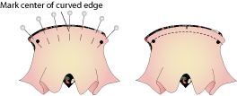
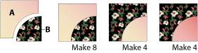
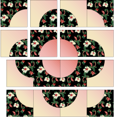

Drunkard's Path Wedding Ring Variation

Skill Level
INTERMEDIATE
Finished Block Size
12″ x 12″
Cutting Instructions:
Download Templates: Click here to download a .pdf with templates.
Sewing Curved Seams
Using marking pencil of choice, mark the center of both Template A and B pieces' curved edges. Pin curved edges
(right side to right side) together at the center and ends. Pin edges together easing in fullness. Stitch seam slowly; do not sew over pins, remove each one as it is
approached. See Diagram I.

Diagram I

Diagram II

Diagram III